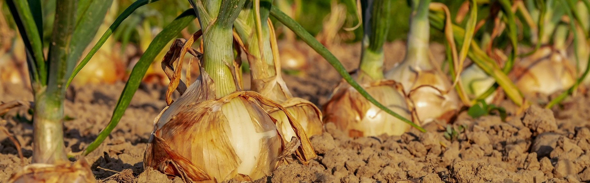

CropGuide
A one stop solution for every farmer
Home
Guide
About Us
Login
Sign Up
Select Language
Assamese
Bengali
Bodo
Dogri
English
Gujarati
Hindi
Kannada
Kashmiri
Konkani
Maithili
Malayalam
Manipuri
Marathi
Nepali
Odia
Punjabi
Sanskrit
Santali
Sindhi
Tamil
Telugu
Urdu
